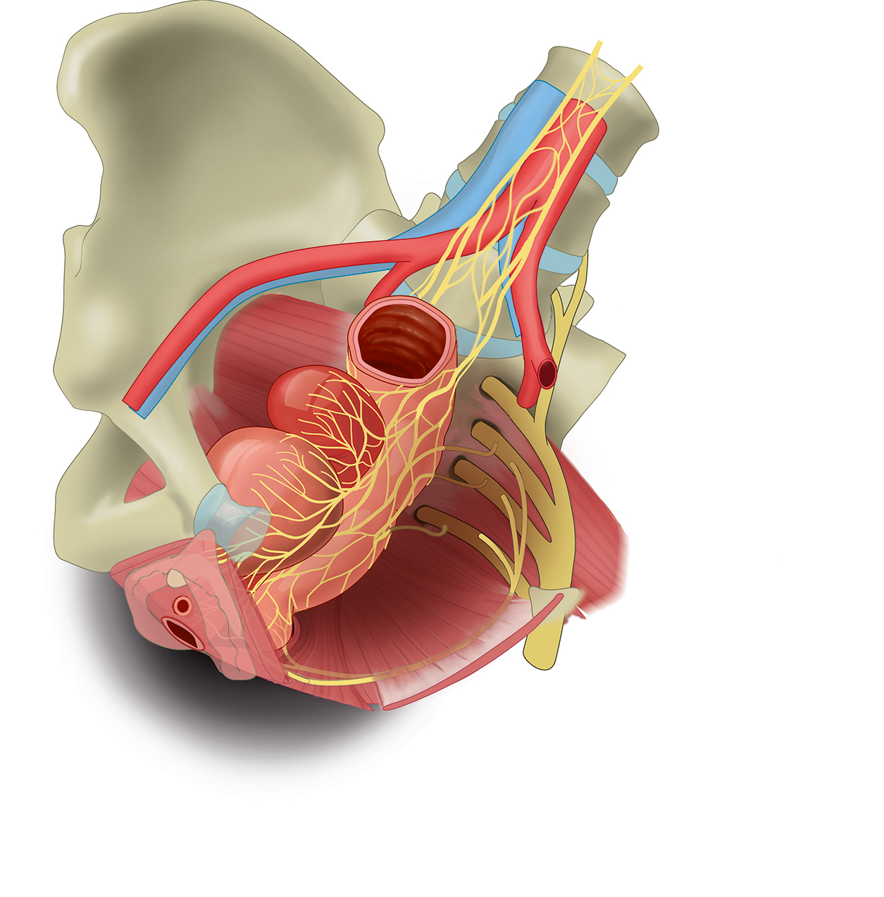

Find a comfortable, private position. If you have a regular bowel routine, you may find this practice fits well in the calmer time after that routine — but trust what feels right for your body today.
This practice pairs naturally with the bladder awareness practice — both work with the same neurological territory at the base of the spinal cord. Some people find it helpful to do them on the same day; others prefer to alternate.
If at any point a part of this practice increases discomfort or feels wrong, stop. Try a different practice, or come back another day.
The Three Phases
This practice uses three different ways of working with your mind. Each one does something different for your brain and body. They flow into each other — each part helps the next part work better.
The Ideal Being
A figure appears in front of you. It might be Jesus. It might be the version of you who feels strong and whole. It might be a being made of light. Whoever feels right.
This figure has a body whose bowel moves at its own rhythm — predictable, manageable, without anxiety. The system is calm and trusted. You watch them at first. Then they step into you, and you become them.
The Bourbeau 2020 research found that unpredictability of bowel function was rated as more distressing than the function itself. Imagery of a predictable, working system addresses the actual emotional weight, not just the physiology.
The Pathway Through Your Body
You follow the signal pathway down from the brain, through the spinal cord, to the sacral level — where bowel control lives. From there, out through nerves to the colon and the pelvic floor.
You listen for any sense of how the bowel is. You gently try the intention to release, then the intention to hold. The trying is what counts, regardless of what happens on the outside.
This is genuinely a two-way conversation — signals up from the body, signals down from the brain. The practice traces both directions.

"Anterior view of female pelvis; internal organs and innervation - no labels" by Ron Slagter, Marco DeRuiter and O. Paul Gobée, LUMC, via AnatomyTOOL, licence CC BY-NC-SA.
Breath and Light
You return to the breath. The warm light pooled in the pelvic bowl during the practice stays there as you settle. The work is held, then released into the rest of your day.
This phase happens at the start (creating the calm state imagery needs) and at the end (allowing the practice to consolidate before you return to ordinary attention).
The practice continues beyond the formal session — in moments of quiet attention during the day, and especially while you sleep.
The audio narration uses a voice clone trained on recordings of my own voice. This is a deliberate choice — it lets me maintain consistent pacing across all five practices and lets the library grow without scheduling fresh recording sessions for each new exercise.
The words are mine. The script is mine. The breath rhythm is mine. The voice is recognisably mine. Only the literal breath sounds are synthesised.
If this feels wrong to you — if hearing AI-generated audio interrupts the practice rather than supporting it — the full written script is available below. Many people find reading the script to themselves works just as well, or better.
The Full Script
The audio above uses a shorter, condensed version of this script. The full text below — with all four phases — is here if you'd like the complete version, to read alongside the audio or use on its own.
Download this script as a PDF ↓Read the full script
Opening · Breath and Light · 3 minutes
Find a position that feels comfortable. This practice works with bowel awareness — if you have a regular routine, you may find it fits well in the calmer time after that. Trust what feels right today.
Take a slow breath in through your nose, and let it out through your mouth. Again. Slower. Let your breathing find its own rhythm.
Bring attention to the top of your head. The crown. Just above it, a soft point of light — felt, not pictured. Each in-breath, brighter. Each out-breath, deeper.
Now let the light begin to travel. Through the crown, the throat, the chest, past the navel, into the pelvic bowl. A soft golden warmth pooling in the lower belly.
Phase One · The Ideal Being · 3 minutes
A figure begins to form in front of you. Whoever this figure is for you. This figure has a body whose bowel moves at its own rhythm — predictable, manageable, without anxiety. There are no accidents, no endless waiting. Just a calm working system the figure trusts.
The figure moves toward you. Steps into you. You aren't watching anymore — you are the figure. Their calm working system is yours. Their trust in their body is your trust in your body. You feel from inside the quiet awareness in your lower belly. The light still warm in the pelvic bowl, settling everything.
Phase Two · The Pathway · 3 minutes
Now we move closer in. Begin at the brain — the part that has always known how the bowel is. Follow the line down through the spinal cord, past the chest and lower back, to the sacral level — where the bowel lives.
This is where the conversation happens. Signals up from the bowel, signals down from the brain. Feel the nerves leaving the spinal cord, branching outward, reaching the colon and the pelvic floor.
Gently — bring awareness to the lower belly. Listen. Then gently try to soften the pelvic floor. The intention to release. Then reverse — the gentle intention to hold, the pelvic floor lifting just slightly. Whatever happens or doesn't happen, the signal is real. Feel the whole circuit, in both directions.
Closing · Breath and Light · 3 minutes
Return to the breath. The light is still in the pelvic bowl. The work is settling in. The signals you sent are real.
Your body moves through natural rhythms all day. About every 90 minutes, your mind drifts. When you feel that drift, return for a breath or two to the warmth in the pelvic bowl.
At night, as you drift toward sleep, the practice is especially potent. A few breaths of pelvic awareness as you fall asleep carries the work into your dreams. Same when you first wake.
Take one more slow breath in. Let it out. Notice the room. The light is yours. The pathway is yours. The practice continues. Thank you.
When to Practise
Once a day is good. Three to five times a week is the dose used in studies that produced measurable results. But the formal session isn't the only time the practice happens. Three other moments in your day are also potent — and free.
When your mind drifts
Every 90 minutes or so, your mind naturally softens. When you notice that drift, return for a breath or two to the warmth in the pelvic bowl. Just a moment of attention.
As you drift off
The minutes before sleep are when your mind is most open. A few breaths of pelvic awareness as you fall asleep carries the work into your dreams.
First thing
That quiet minute before you reach for anything. A few breaths. The lower belly. The light. The waking edge is as receptive as the falling-asleep edge.
This protocol draws on peer-reviewed research in motor imagery, mirror neuron activation, and ultradian receptivity, integrated with contemplative visualisation traditions older than any of the science.
Each element has scientific support on its own. The integration — these three phases in this order, as a unified practice — is my own synthesis and has not been clinically tested.
This is not a treatment. It is not a substitute for medical care or rehabilitation. It is a practice, offered freely. Some people will find it helpful. Some will not.